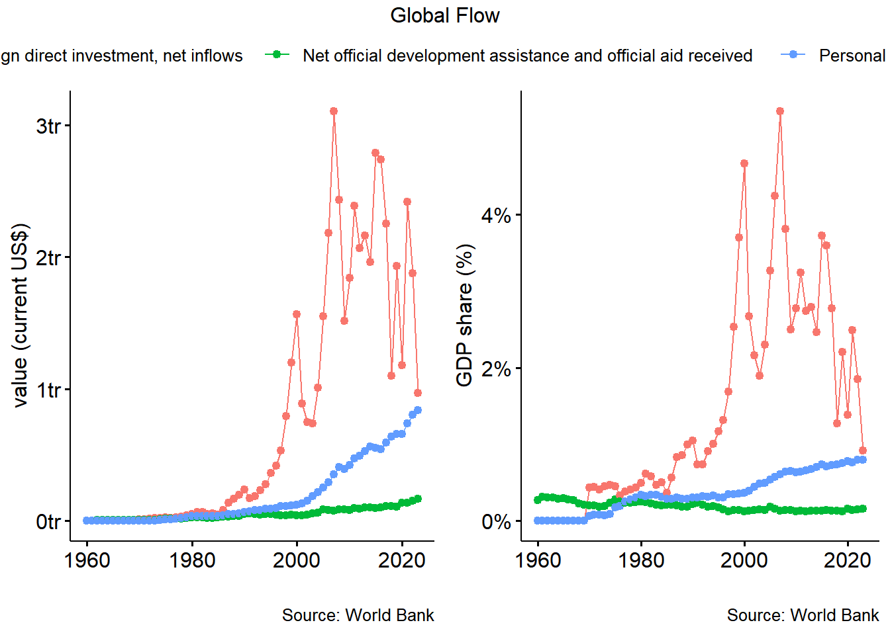
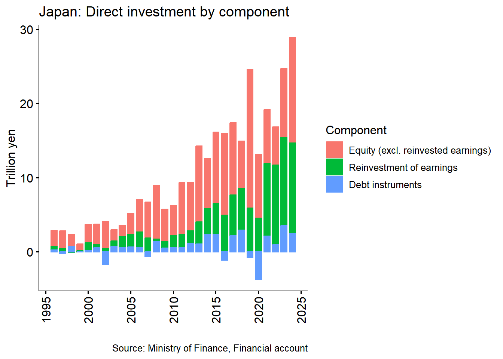
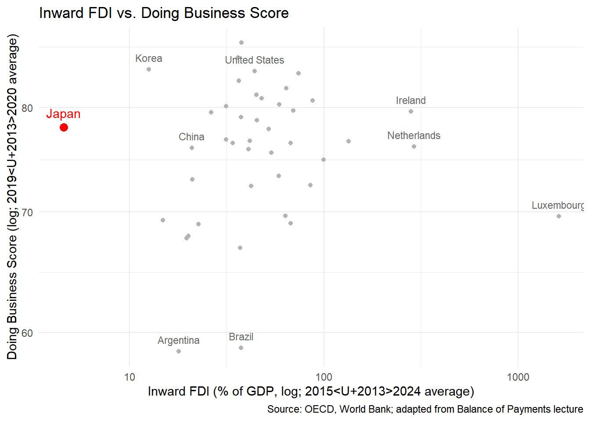
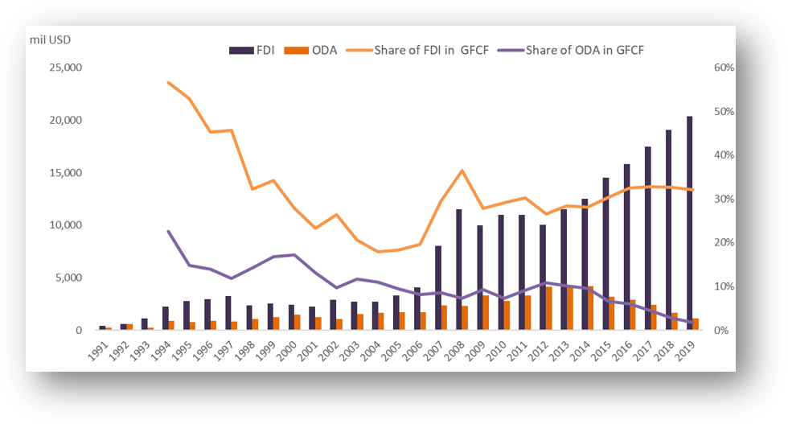

Foreign Direct Investment
Objectives
- Outward vs inward FDI
- Identify barriers to inward FDI
- Compare commercial and strategic investment logic against official development assistance (ODA)
Key Concepts
- Foreign Direct Investment (FDI)
- Mergers & Acquisitions (M&A)
- Multinational Enterprises (MNEs)
Roadmap
- Concepts: FDI, M&A, MNEs
- Trends: outward FDI from ASEAN, manufacturing and services
- Barriers: what holds back inward FDI
- Logic: commercial and strategic investment vs. ODA
Overview: FDI and ODA
- Recap of lecture 1: ODA is public, concessional, development-oriented.
- Today: FDI is private and profit-seeking; compare scale and GDP share.
Key concepts: FDI, M&A, MNEs
- FDI: cross-border investment with a lasting interest and control (commonly a 10% voting-share threshold)
- Forms: greenfield, M&A, reinvested earnings
- M&A: acquiring or merging with an existing foreign firm, rather than building new capacity
- MNEs: firms that own and control operations in more than one country; the main actors behind FDI
- Motives: market-seeking, resource-seeking, efficiency-seeking
FDI vs. portfolio investment
- Direct investment: lasting interest and influence over management of a foreign enterprise (typically 10% or more of voting power).
- Portfolio investment: cross-border holdings of securities without a direct-investment relationship.
- Direct investment is closely linked to multinational production and global value chains; portfolio flows are generally more liquid and volatile.
- In the balance of payments, both direct and portfolio investment are recorded in the financial account.
- The Balance of Payments lecture shows that Japan’s portfolio flows have been more volatile than direct investment flows.
Japan’s direct investment: Outward vs. inward
- Cumulative 1996–2025: outward roughly 370 trillion yen vs. inward roughly 58 trillion yen (about 6x), assuming units of 100 million yen.
- Japan is a large net outward investor; inward FDI stays small relative to GDP. Use this to lead into “barriers to inward FDI”.
Japan’s outward direct investment: Components

Japan’s capital liberalization and FDI
- Before the 1970s: strict controls on capital transactions.
- 1970s: gradual liberalization of inward direct and portfolio investment.
- 1980: foreign exchange regime shifted from generally prohibited unless permitted to generally free unless restricted.
- 1980s–1990s: further liberalization of outward investment and foreign borrowing.
- Discussion: Why might inward FDI remain limited even after legal restrictions are relaxed?
- Adapted from the capital controls and liberalization timeline in the Balance of Payments lecture.
- Legal openness does not automatically eliminate business costs, hiring difficulties, or other barriers.
Barriers to inward FDI
| Reported barrier | 2012 (%) | 2016 (%) |
|---|---|---|
| High cost of doing business | 78.6 | 74.6 |
| Distinctiveness of the Japanese market | 43.1 | 46.6 |
| Difficulty securing personnel | 34.1 | 45.7 |
| Strict regulations and permits | 36.7 | 32.1 |
| Complicated administrative procedures | 33.7 | 28.6 |
Source: Hoshi (2018), Table 1, based on METI surveys of foreign affiliates.
- These are selected responses from the 2012 and 2016 surveys, not a comprehensive ranking of all barriers.
- The reported difficulty securing personnel increased between surveys.
- Connect this Japan case to the broader regulatory, infrastructure and institutional barriers in the next slide.
Japan’s inward FDI and business environment

- The original lecture emphasizes Japan’s relatively low inward FDI compared with other advanced economies.
- This is a descriptive cross-country comparison, not evidence that the business score causes FDI.
Investment logic: FDI vs. ODA
| Aspect | Commercial FDI | Strategic investment | ODA |
|---|---|---|---|
| Main actor | Private firms (MNEs) | State-linked firms, state-backed investors | Official agencies |
| Objective | Profit, market access, efficiency | Supply security, influence, geopolitical position | Development and welfare of recipients |
| Terms | Market-based returns | Returns may be secondary to strategic gain | Concessional (grant element) |
| Risk appetite | Avoids high-risk, low-return locations | May accept lower returns for strategic reasons | Goes where private capital avoids |
| Link to recipient | Follows investment climate | Shapes it to its own ends | Builds preconditions for investment |
- Table is a framing device; adapt the “strategic” column to the cases you plan to discuss.
ODA and FDI relationship
- Infrastructure & human capital improvement → lower investment costs
- Institutional reforms & risk reduction → improved investment climate
- Policy dialogue & technical cooperation → regulatory harmonization

Complementarity vs. Substitution
- Complementary view:
- ODA builds preconditions for private investment (infrastructure, governance).
- Especially in low-income countries where private capital avoids risk.
- Substitution view:
- Excessive aid can crowd out FDI if it distorts markets or maintains uncompetitive sectors.
- Conditionality or tied aid may limit spillovers.
Japan’s Experience
- Tied aid and “ingredients approach” → enabled Japanese firms to invest later.
- Evidence: Ono and Sekiyama (2023) on the effect of ODA on FDI by aid type
- Case study: Vietnam (Tsuno, 2023)
- Transition from aid-recipient to investment-partner relationship.
- Check that the Ono and Sekiyama (2023) finding matches the bullet above before presenting; the original deck cited it only in references.
Future Directions
- Align ODA with investment climate improvement (connectivity, legal reform)
- Promote Aid for Trade and Public-Private Partnerships (PPPs)
- Ensure transparency to avoid tied-aid distortions
References
- Burnside, C. & Dollar, D. 2000, ‘Aid, policies, and growth’, American economic review, 90 (4).
- Nguyen, H. P., Huynh, A. N. Q., Reisach, U., & Kim, X. L. T. 2022. How does Japanese ODA really contribute to economic growth for ASEAN countries? Journal of International Economics and Management, 22(2).
- MOFA, 2023, White Paper on Development Cooperation 2023
- Ono, S., & Sekiyama, T. (2023). Differences in impact of official development assistance on foreign direct investment by aid types. Frontiers in Political Science, 5.
- Hoshi, T. (2018). Has Abenomics succeeded in raising Japan’s inward foreign direct investment? Asian Economic Policy Review, 13(1), 149–168.
- Tsuno, M., 2023, The Role of Japanese Official Development Assistance in Viet Nam’s Socio-economic Development. In Viet Nam 2045: Development Issues and Challenges, (Kimura, F. et al, pp. 53–97). ERIA.
- Data link
- https://data.worldbank.org/indicator/NY.GDP.MKTP.CD
- https://data.worldbank.org/indicator/BX.KLT.DINV.CD.WD
- https://data.worldbank.org/indicator/DT.ODA.ALLD.CD
- https://data.worldbank.org/indicator/BX.TRF.PWKR.CD.DT